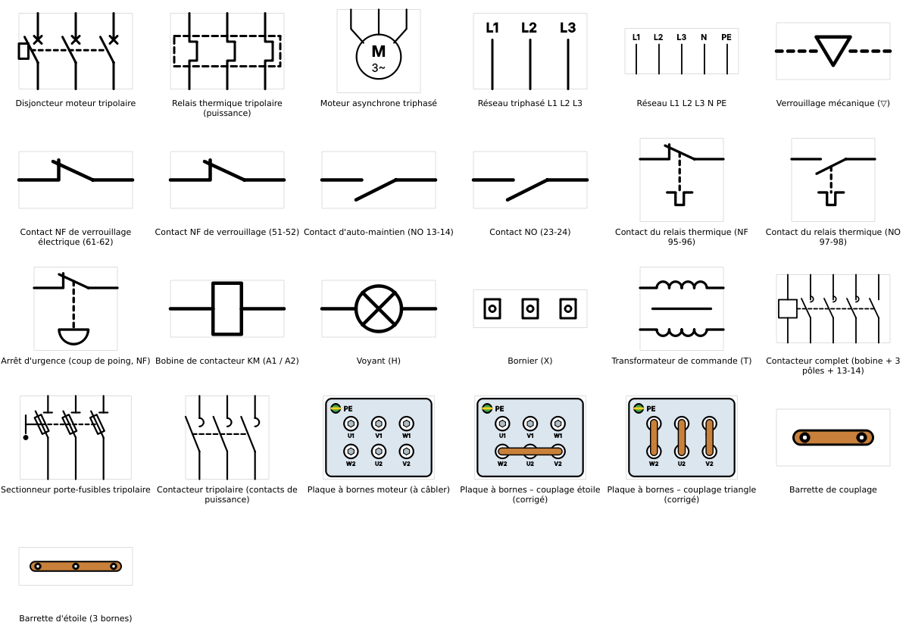
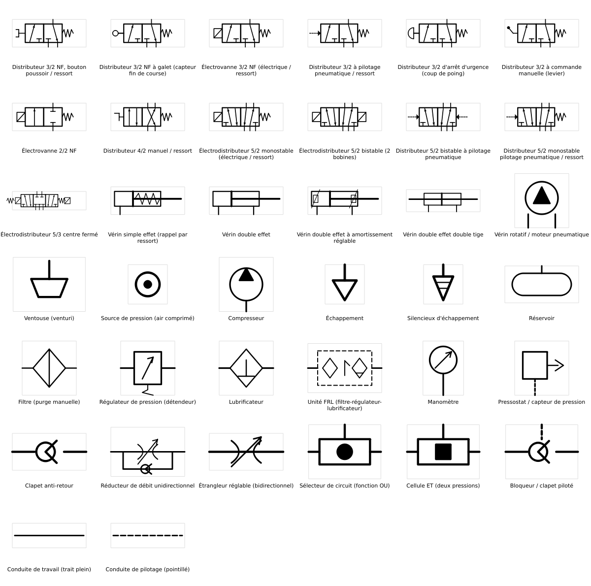
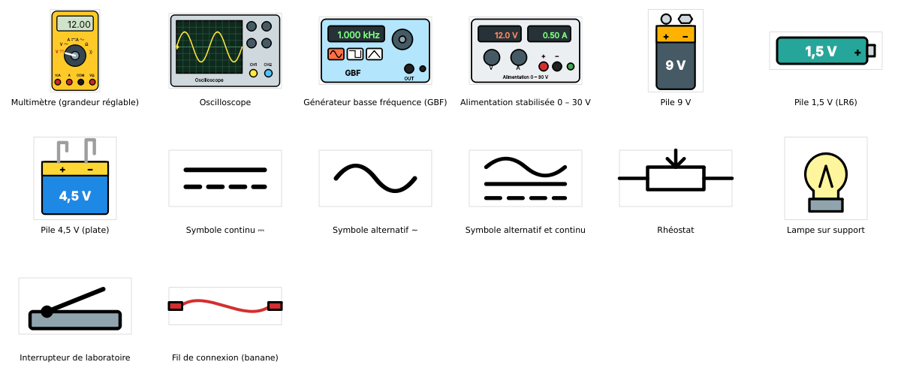
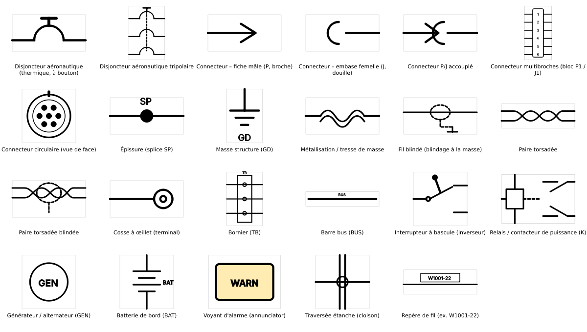
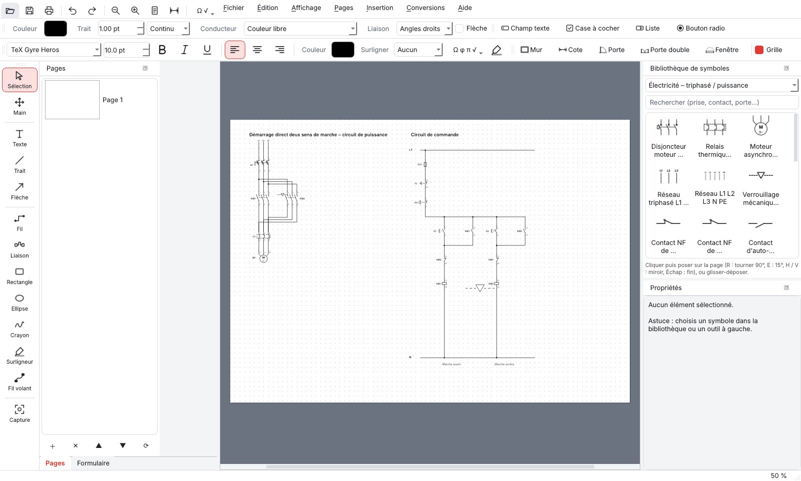
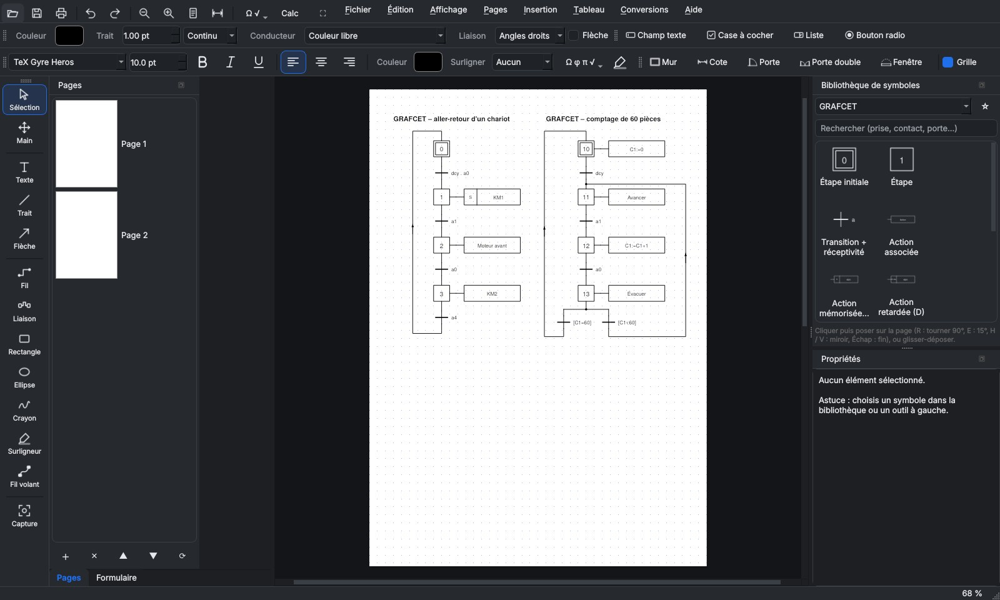
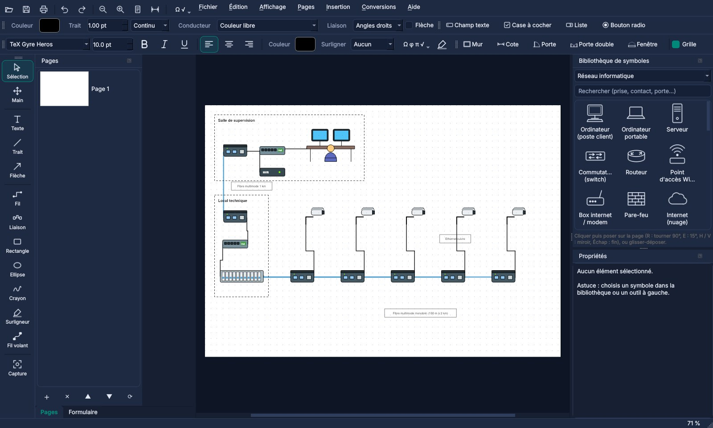

Lire, annoter, signer et remplir des PDF. Dessiner des schémas électriques, pneumatiques, réseau, des GRAFCET et des plans de logement. Convertir Word et ODF dans les deux sens. Pensé pour la classe, gratuit pour tous.
Les dessins sont enregistrés en vectoriel dans le PDF : nets à toutes les échelles, et encore modifiables quand on rouvre le fichier dans PDF DUO.
Ouvrir, annoter, surligner, pages (fusionner, extraire, pivoter), impression, PDF protégés.
Signature dessinée ou importée, champs texte, cases, listes, boutons radio, zones de signature et liens, remplissables.
Fils accrochés aux bornes, liaisons automatiques, jonctions, couleurs de conducteurs, repères KM1 et numéros de bornes.
Étapes, transitions, actions, divergences ET / OU ; Ctrl+G ajoute transition + étape déjà reliées et numérotées.
Murs à l'échelle, cotes réelles, portes et fenêtres qui se posent seules dans les murs, symboles NF C 15-100.
Conversions dans les deux sens avec LibreOffice et pdf2docx ; images vers PDF, pages vers PNG.
Grille aimantée, rotation libre sur 360°, miroir, agrandissement proportionnel, capture de zone et copier-coller vers Word.
Français, anglais, espagnol, portugais, allemand, italien. Thèmes clair, sombre, bleu nuit, sable.
Gratuit, sans compte et installable sur tous les postes : PDF DUO sert aux élèves et aux professeurs, mais aussi à la vie du lycée.
Schémas électriques et pneumatiques, plans d'installation, GRAFCET, réseau, sciences : des documents propres, rendus en PDF ou imprimés.
Affiches et flyers en PDF, bulletins d'adhésion à remplir, autorisations et comptes rendus signés, conversion des documents Word du bureau de la MDL.
Remplir et signer un formulaire, fusionner ou découper des PDF, convertir un fichier Word ou LibreOffice, sans logiciel payant.
Dessinés d'après les fiches utilisées en lycée professionnel (bacs pro MELEC et CIEL), et complétés au fil des retours d'un enseignant.




Exemples fournis avec le logiciel : démarrage deux sens de marche, GRAFCET et carte mentale, vidéosurveillance sur fibre.



Gratuit, sans publicité, sans compte. Conversion Word → PDF intégrée ; pour une conversion la plus fidèle et pour l'ODT, installer aussi LibreOffice (gratuit).
Chaque notice existe aussi en PDF ; elle est incluse dans le logiciel (Aide › Notice d'utilisation, touche F1).
Sans installeur, avec Python 3.9 ou plus :
pip install -r requirements.txtpython pdfduo.py (ou double-clic sur lancer-windows.bat).Si le logiciel vous rend service, en classe, à la MDL ou ailleurs, un petit don aide à le faire évoluer : nouveaux symboles, nouvelles langues, corrections.
Dons sur Ko-fi : montant libre, par carte bancaire ou PayPal, sans créer de compte.Le téléchargement démarre. PDF DUO est gratuit, libre et sans publicité : si le logiciel vous rend service, un petit don aide à ajouter des symboles, des langues et des corrections.
Faire un don sur Ko-fi